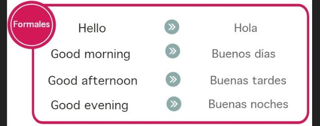
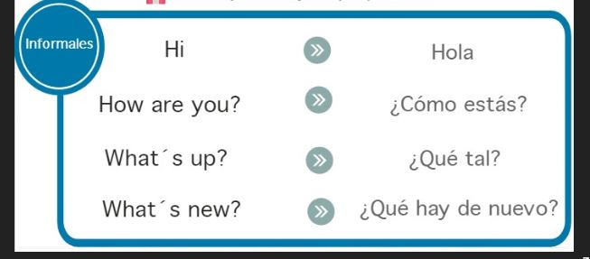

En esta lección aprenderás a utilizar de forma adecuada los saludos y despedidas en inglés. Este tema también se conoce como Greetings and Farewells. Haremos énfasis en la pronunciación. Aprender la pronunciación correcta de los saludos y las despedidas te ayudará a sentirte más cómodo o cómoda hablando inglés. Existen saludos formales y saludos informales, en la siguiente imagen te indicaremos cuales son.
SALUDOS FORMALES EN INGLÉS:

SALUDOS INFORMALES EN INGLÉS:

DESPEDIDAS FORMALES EN INGLÉS
DESPEDIDAS INFORMALES EN INGLÉS
En el siguiente video profundizaras más en la pronunciación de los saludos y despedidas: